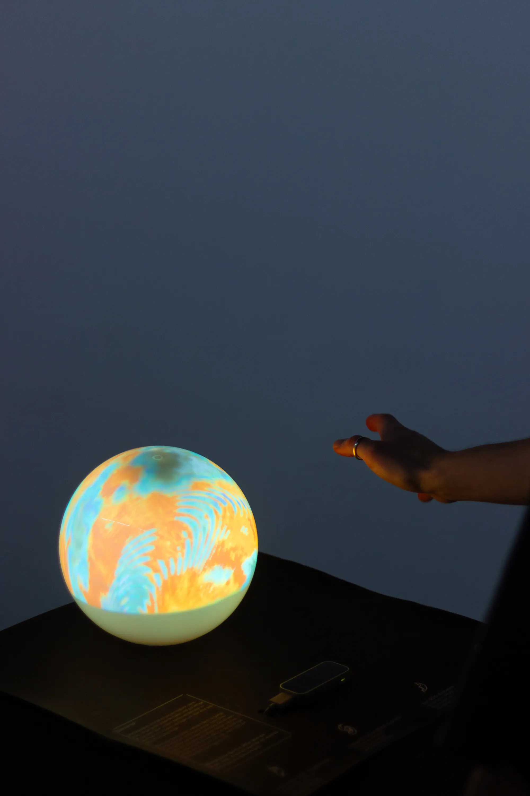
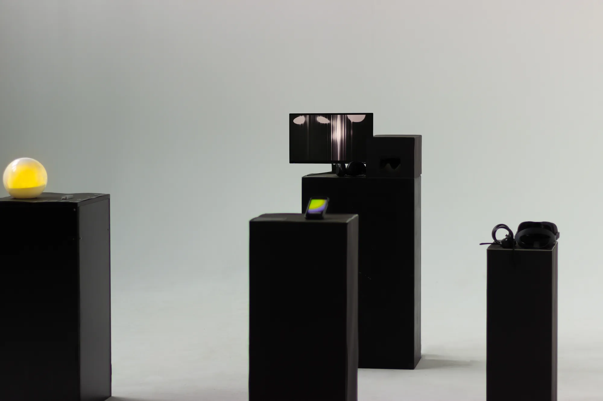
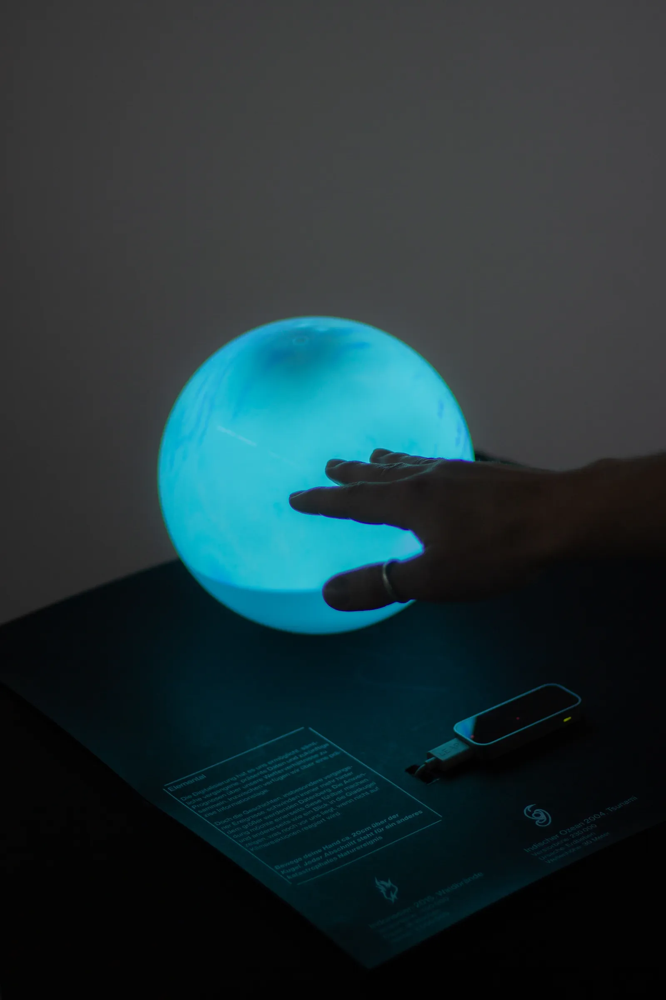
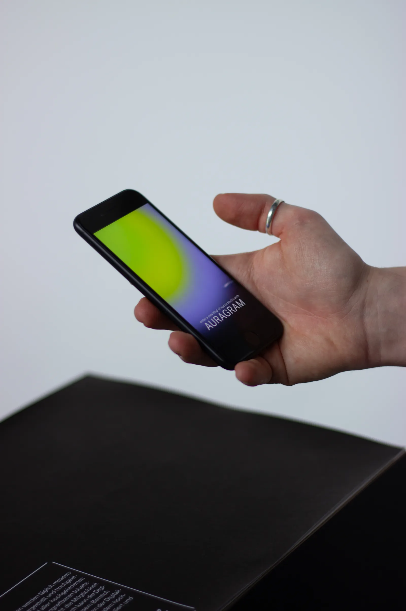
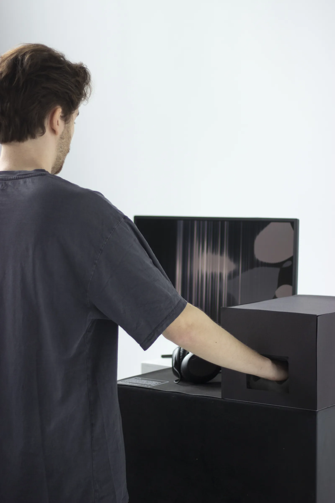
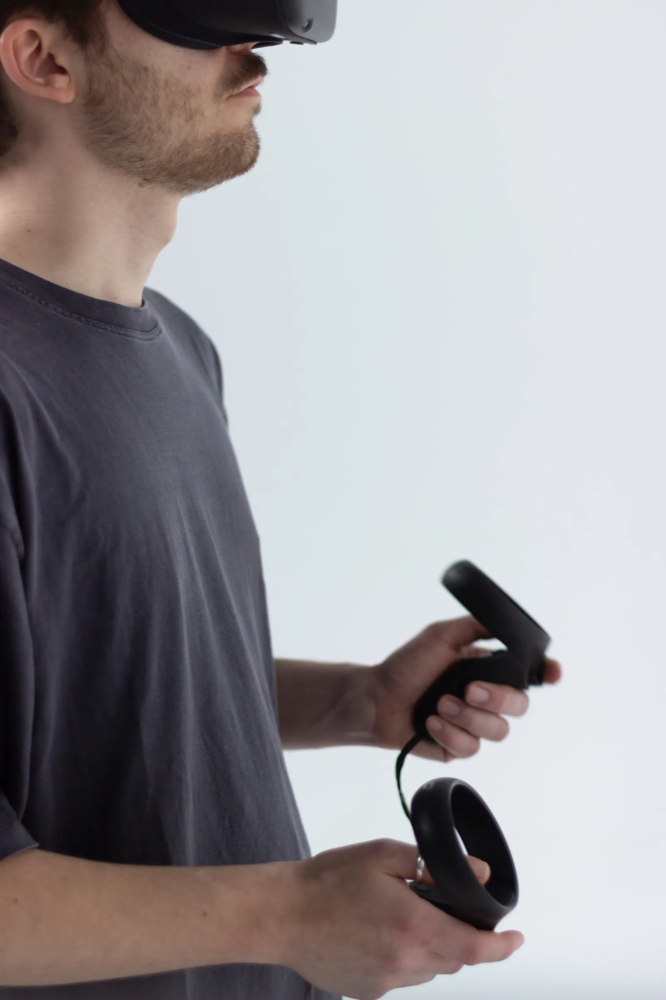
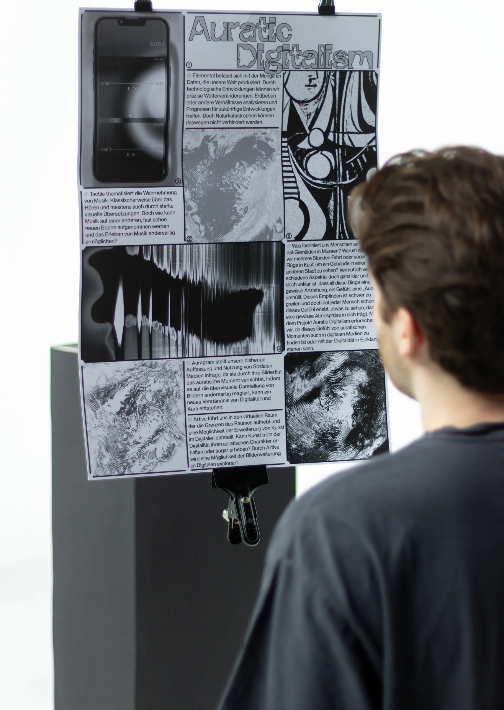

Auratic Digitalism
Four experiments on whether digital applications can create an aura.
- Year
- 2022 – 2023
- Context
- Semester project, supervised by Prof. Erich Schöls
- Team
- with Juan Cruz Caamaño
- Role
- Elemental (half), Auragram (development), Tactile (mechanics and Arduino); Artive was built by Juan
- Tools
- Unity, TouchDesigner, Leap Motion, Arduino, VR, API

01 / Aura
What fascinates us about an original painting in a museum? Why do we travel for hours to see a building? Walter Benjamin explains the "aura" of such things with their authenticity, uniqueness and distance, and argues that technical reproduction wears it away. Auratic Digitalism asks whether the digital space can nevertheless create an auratic moment, and how.

02 / Four exhibits
Four exhibits approach this question from different sides. Elemental is a glass sphere that shows natural disasters of fire, water, earth and air, controlled by hand movements over a Leap Motion. Auragram is a smartphone app that works like social media, but turns a photograph into sound instead of showing it. Tactile lets visitors feel music as vibrations in their fingertips. Artive is a VR space in which a painting assembles itself fragment by fragment while a voice tells its background.




03 / Proof of concept
Together the exhibits became a proof of concept: an auratic feeling can be carried into digital media and made tangible, at the intersection of the analogue and digital realm.

04 / Exhibitions & links
Exhibitions & presentations
- Final presentation, 26 January 2023
- Werkschau, February 2023